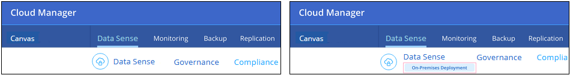
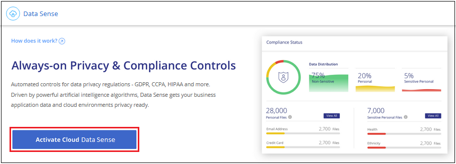
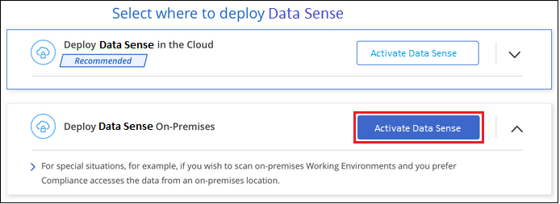

クラウドデータの導入センス
Cloud Manager のワークスペースに Cloud Data Sense インスタンスを導入するには、いくつかの手順を実行します。クラウドまたはオンプレミスシステムにデータセンスを導入できます。
オンプレミスの ONTAP 作業環境を、オンプレミスにあるデータセンスインスタンスを使用してスキャンする場合は、オンプレミス環境をインストールすることをお勧めします。ただし、これは必須条件ではありません。どのインストール方法を選択しても、ソフトウェアはまったく同じように機能します。
クイックスタート
これらの手順を実行すると、すぐに作業を開始できます。また、残りのセクションまでスクロールして詳細を確認することもできます。
コネクタを作成します
コネクタがない場合は、 Azure または AWS でコネクタを作成します。を参照してください "AWS でコネクタを作成する" または "Azure でコネクタを作成する"。
また可能です "コネクタをオンプレミスに導入" 自社ネットワークまたはクラウド内の既存の Linux ホスト
前提条件を確認する
環境が前提条件を満たしていることを確認します。これには、インスタンスのアウトバウンドインターネットアクセス、コネクタと Cloud Data Sense 間のポート 80 経由の接続などが含まれます。 すべてのリストを参照してください。
-
クラウドにインストールした場合は、 Cloud Data Sense インスタンス用の vCPU が 16 個必要です。を参照してください "インスタンスタイプの詳細"。
-
オンプレミスにインストールした場合は、を満たす Linux システムが必要です "次の要件があります"。
クラウドデータの導入センス
インストールウィザードを起動して、 Cloud Data Sense インスタンスを導入します。
クラウドまたはオンプレミスの場所に Cloud Data Sense を導入できます。UI に表示される唯一の違いは「オンプレミス導入」です。

Cloud Data Sense サービスに登録する
Cloud Data Sense によってスキャンされる最初の 1TB のデータは、 Cloud Manager に無料で保存されています。その後もデータのスキャンを続行するには、 AWS または Azure Marketplace へのサブスクリプションが必要です。
コネクタを作成しています
コネクタがない場合は、 Azure または AWS でコネクタを作成します。を参照してください "AWS でコネクタを作成する" または "Azure でコネクタを作成する"。ほとんどの場合、 Cloud Data Sense を有効にする前にコネクタをセットアップしておくことができます "Cloud Manager の機能にはコネクタが必要です"ただし、ここで設定する必要がある場合もあります。
AWS または Azure に導入されているコネクタを使用する必要がある場合は、次のようなシナリオがあります。
-
AWS または AWS S3 バケット内の Cloud Volumes ONTAP のデータをスキャンするときは、 AWS のコネクタを使用します。
-
Azure または Azure NetApp Files で Cloud Volumes ONTAP 内のデータをスキャンする場合は、 Azure のコネクタを使用します。
オンプレミスの ONTAP システムでは、どちらのコネクタでも、ネットアップ以外のファイル共有、汎用の S3 オブジェクトストレージ、データベース、 OneDrive のフォルダをスキャンできます。
また、次のことも可能です "コネクタをオンプレミスに導入" 自社ネットワークまたはクラウド内の既存の Linux ホストデータセンスをオンプレミスにインストールする予定のユーザによっては、 Connector をオンプレミスにインストールすることもできます。
ご覧のように、を使用する必要がある状況もあります "複数のコネクタ"。
| Azure NetApp Files のスキャンを計画している場合は、スキャンするボリュームと同じ領域に導入していることを確認する必要があります。 |
前提条件の確認
Cloud Data Sense を導入する前に、次の前提条件を確認し、サポートされている構成であることを確認してください。
- Cloud Data Sense からのアウトバウンドインターネットアクセスを有効にする
-
AWS 、 Azure 、オンプレミスのいずれに Cloud Data Sense を導入しているかに応じて、以下の表を参照
-
AWS 環境に必要なエンドポイント： *
エンドポイント 目的 Cloud Central アカウントを含む Cloud Manager サービスとの通信。
¥ https://netapp-cloud-account.auth0.com ¥ https://auth0.com
NetApp Cloud Central との通信により、ユーザ認証を一元的に行うことができます。
https://cloud-compliance-support-netapp.s3.us-west-2.amazonaws.com \ https://hub.docker.com \ https://auth.docker.io \ https://registry-1.docker.io \ https://index.docker.io/ \ https://dseasb33srnrn.cloudfront.net/ \ https://production.cloudflare.docker.com/
ソフトウェアイメージ、マニフェスト、およびテンプレートにアクセスできます。
ネットアップが監査レコードからデータをストリーミングできるようにします。
¥ https://cognito-idp.us-east-1.amazonaws.com ¥ https://cognito-identity.us-east-1.amazonaws.com ¥ https://user-feedback-store-prod.s3.us-west-2.amazonaws.com ¥ https://customer-data-production.s3.us-west-2.amazonaws.com
Cloud Data Sense を使用して、マニフェストやテンプレートにアクセスしてダウンロードしたり、ログや指標を送信したりできます。
-
Azure およびオンプレミス環境に必要なエンドポイント： *
エンドポイント 目的 Cloud Central アカウントを含む Cloud Manager サービスとの通信。
¥ https://netapp-cloud-account.auth0.com ¥ https://auth0.com
NetApp Cloud Central との通信により、ユーザ認証を一元的に行うことができます。
https://support.compliance.cloudmanager.cloud.netapp.com/ \ https://hub.docker.com \ https://auth.docker.io \ https://registry-1.docker.io \ https://index.docker.io/ \ https://dseasb33srnrn.cloudfront.net/ \ https://production.cloudflare.docker.com/
ソフトウェアイメージ、マニフェスト、テンプレートへのアクセス、およびログとメトリックの送信を提供します。
ネットアップが監査レコードからデータをストリーミングできるようにします。
* オンプレミスインストールのみ： * 。 https://github.com/docker ¥ https://download.docker.com ¥ https://rhui3.us-west-2.aws.ce.redhat.com ¥ https://github-production-release-asset-2e65be.s3.amazonaws.com ¥ https://pypi.org ¥ https://pypi.python.org ¥ https://files.pythonhosted.org ¥ http://mirror.centos.org ¥ http://mirrorlist.centos.org ¥ http://mirror.centos.org/centos/7/extras/x86_64/Packages/container-selinux-2.107-3.el7.noarch.rpm
インストールの前提条件パッケージを提供します。
-
- Cloud Manager に必要な権限が割り当てられていることを確認します
-
Cloud Manager に、リソースを導入する権限と、 Cloud Data Sense インスタンス用のセキュリティグループを作成する権限があることを確認します。最新の Cloud Manager 権限は、で確認できます "ネットアップが提供するポリシー"。
- vCPU の制限を確認してください
-
AWS では、インスタンスファミリーは On-Demand Standard Instances です。Azure では ' インスタンスファミリーは _Standard DSView3 Family _ です
vCPU の制限の詳細については、次のリンクを参照してください。
- Cloud Manager が Cloud Data Sense にアクセスできることを確認
-
この接続により、データセンスインスタンスの展開が可能になり、 [ コンプライアンス（ Compliance ） ] タブと [ ガバナンス（ Governance ） ] タブで情報を表示できます。
- クラウドデータを常に運用しておく必要があります
-
データを継続的にスキャンするには、 Cloud Data Sense インスタンスがオンのままになっている必要があります。
- Web ブラウザから Cloud Data Sense への接続を確認する
-
データセンスインスタンスは、プライベート IP アドレスを使用して、インデックス付きデータがインターネットにアクセスできないようにします。そのため、 Cloud Manager へのアクセスに使用する Web ブラウザは、そのプライベート IP アドレスに接続する必要があります。この接続は、 AWS または Azure への直接接続（ VPN など）、またはデータセンスインスタンスと同じネットワーク内にあるホストから確立できます。
クラウドへの Cloud Data Sense インスタンスの導入
クラウドにクラウドデータセンスのインスタンスを導入する方法は、最も一般的な導入モデルです。ただし、を選択することもできます Linux ホストに Compliance ソフトウェアを導入します 自社ネットワークまたはクラウドに導入できます。
データセンスソフトウェアは、どのインストール方法を選択してもまったく同じように機能します。
-
Cloud Manager で、 * Data sense * をクリックします。
-
[Activate Cloud Data Sense （クラウドデータセンスの有効化） ] をクリック

-
Activate Data Sense * をクリックして、クラウド導入ウィザードを開始します。

-
導入手順が完了すると、ウィザードに進捗状況が表示されます。問題が発生すると停止し、入力を求められます。

-
インスタンスが配備されたら、 * 設定に進む * をクリックして _Configuration_page に移動します。
Cloud Manager によってクラウドデータ検出インスタンスがクラウドプロバイダに導入されます。
設定ページで、スキャンするデータソースを選択できます。
また可能です Cloud Data Sense サービスに登録する 現時点では、データ量が 1TB を超えるまでは料金は発生しません。
クラウドデータセンスインスタンスをオンプレミスに導入する
不要な場合は、ネットワーク上の Linux ホストにデータセンスソフトウェアをダウンロードしてインストールできます クラウドに導入できます。
データセンスソフトウェアは、どのインストール方法を選択してもまったく同じように機能します。
| Cloud Data Sense は、現在、ソフトウェアがオンプレミスにインストールされている場合、 S3 バケットと Azure NetApp Files をスキャンできない。このような場合は、クラウドとに別のコネクタとデータセンスのインスタンスを導入する必要があります "コネクタを切り替えます" データソースごとに異なる。 |
-
オペレーティングシステム： Red Hat Enterprise Linux または CentOS バージョン 8.0 または 8.1
-
バージョン 7.8 を使用できますが、 Linux カーネルのバージョンは 4.14 以降である必要があります
-
OS が Docker エンジンをインストールできる必要があります（必要に応じて、 _firewalld_service を無効にするなど）。
-
-
RAM ： 64GB （ホストでスワップメモリを無効にする必要があります）
-
CPU ： 16 コア
-
ディスク： 500GB SSD
-
Red Hat Enterprise Linux システムは、 Red Hat サブスクリプション管理に登録する必要があります。登録されていない場合、システムはインストール中に必要なサードパーティソフトウェアをアップデートするためのリポジトリにアクセスできません。
-
Cloud Manager でインストールの進捗状況を確認できるように、ポート 8080 が開いていることを確認してください。
-
Cloud Data Sense をインストールするには root 権限が必要です。
を参照してください 前提条件の確認 Cloud Data Sense がインターネット経由でアクセスできる必要がある要件とエンドポイントの完全なリストについては、を参照してください。
-
から Cloud Data Sense ソフトウェアをダウンロードします "ネットアップサポートサイト"。
-
使用する Linux ホストにインストーラファイルをコピーします (`cp またはその他の方法を使用 ) 。
-
Cloud Manager で、 * Data sense * をクリックします。
-
[Activate Cloud Data Sense （クラウドデータセンスの有効化） ] をクリック
-
Activate Data Sense * をクリックして、オンプレミス導入ウィザードを開始します。

-
_Deploy Cloud Data Sense on Premises _ Dialog で、提供されたコマンドをコピーしてテキストファイルに貼り付け、後で使用できるようにします。例：
sudo ./install.sh -a 12345 -c 27AG75 -t 2198qq
-
ホストマシンでインストーラファイルを解凍します。
tar -xzf cc_onpm_installer.tar.gz
-
インストーラからプロンプトが表示されたら、一連のプロンプトで必要な値を入力するか、または最初のプロンプトでコマンド全体を入力できます。
プロンプトに従ってパラメータを入力します。 完全なコマンドを入力します。 -
手順 6 からコピーした情報を貼り付けます。 'UDO./install.sh -a <account_id>-c <agent_id>-t<token>`
-
コネクタインスタンスからアクセスできるように、 Data Sense ホストマシンの IP アドレスまたはホスト名を入力します。
-
Cloud Manager Connector ホストマシンの IP アドレスまたはホスト名を入力して、 Data Sense インスタンスからアクセスできるようにします。
-
プロンプトが表示されたら、プロキシの詳細を入力Cloud Manager ですでにプロキシが使用されている場合は、 Cloud Manager が使用するプロキシが Data Sense で自動的に使用されるため、ここでもう一度入力する必要はありません。
または、コマンド全体を事前に作成して、最初のプロンプトに「 sudo ./install.sh -a <account_id>-c <agent_id>-t <token> --host <ds_host>--cm-host<proxy_host>--proxy-host <proxy_host>--proxy-port-proxy-password</password> 」と入力することもできます
変数値：
-
_account_id _ = ネットアップアカウント ID
-
_agent_id _ = コネクタ ID
-
_ctoken _ = JWT ユーザートークン
-
ds_host = Data Sense Linux システムの IP アドレスまたはホスト名
-
cm_host= Cloud Manager Connector システムの IP アドレスまたはホスト名。
-
proxy_host = ホストがプロキシサーバの背後にある場合は、プロキシサーバの IP 名またはホスト名。
-
proxy_port= プロキシサーバに接続するポート（デフォルトは 80 ）です。
-
proxy_scheme= 接続方式： https または http （デフォルト http ）。
-
proxy_user= ベーシック認証が必要な場合、プロキシサーバに接続するための認証されたユーザ。
-
proxy_password = 指定したユーザ名のパスワード。
-
Cloud Data Sense インストーラは、パッケージのインストール、 Docker のインストール、インストールの登録、および Data Sense のインストールを行います。インストールには 10~20 分かかります。
ホストマシンとコネクタインスタンス間のポート 8080 を介した接続がある場合、 Cloud Manager の Data sense タブにインストールの進行状況が表示されます。
設定ページで、スキャンするデータソースを選択できます。
また可能です Cloud Data Sense サービスに登録する 現時点では、データ量が 1TB を超えるまでは料金は発生しません。データセンスをオンプレミスシステムに導入した場合は、 AWS または Azure Marketplace へのサブスクリプションを使用できます。
クラウドデータセンスサービスへのサブスクライブ
Cloud Data Sense によってスキャンされる、 Cloud Manager のワークスペース内の最初の 1TB のデータは無料です。その後もデータのスキャンを続行するには、 AWS または Azure Marketplace へのサブスクリプションが必要です。
いつでもサブスクライブでき、データ量が 1TB を超えるまでは料金は発生しません。データセンスダッシュボードからスキャンされているデータの総容量を常に確認できます。また、 [ 今すぐサブスクライブ ] ボタンを使用すると、準備が整ったときに簡単にサブスクライブできます。
 ボタン。"]
ボタン。"]
-
注： * Cloud Data Sense から登録を求められたが、 Azure サブスクリプションをすでにお持ちの場合は、古い * Cloud Manager * サブスクリプションを使用している可能性があるため、新しい * NetApp Cloud Manager * サブスクリプションに変更する必要があります。を参照してください Azure で新しい NetApp Cloud Manager プランに変更 を参照してください。
これらの手順は、 _Account Admin_role 権限を持つユーザが実行する必要があります。
-
Cloud Manager コンソールの右上にある設定アイコンをクリックし、 * クレデンシャル * を選択します。
-
AWS インスタンスプロファイルまたは Azure Managed Service Identity のクレデンシャルを検索します。
サブスクリプションは、インスタンスプロファイルまたはマネージドサービス ID に追加する必要があります。充電ができない。
すでに月額プランをお持ちの場合は、すべて設定されています。他に必要なことはありません。
-
まだサブスクリプションをお持ちでない場合は、クレデンシャルの上にカーソルを合わせて、操作メニューをクリックします。
-
[ サブスクリプションの追加 ] をクリックします。

-
[ サブスクリプションの追加 ] をクリックし、 [* 続行 ] をクリックして、手順に従います。
次のビデオでは、 Marketplace サブスクリプションを AWS サブスクリプションに関連付ける方法を紹介します。
次のビデオでは、 Marketplace サブスクリプションを Azure サブスクリプションに関連付ける方法を紹介します。
Azure で新しい Cloud Manager プランに変更
クラウドデータセンス（ Cloud Compliance ）が、 Azure Marketplace サブスクリプション「 * NetApp Cloud Manager * 」に 2020 年 10 月時点で追加されました。元の Azure * Cloud Manager * サブスクリプションをすでにお持ちの場合、 Cloud Data Sense を使用することはできません。
Cloud Data Sense を使い始める前に、以下の手順に従って、新しい * NetApp Cloud Manager * サブスクリプションに変更する必要があります。
| 既存のサブスクリプションに特別なプライベートオファーが含まれていた場合は、ネットアップに連絡して、データに特化した新しいプライベートオファーを問題で提供できるようにする必要があります。 |
-
Cloud Manager コンソールの右上にある設定アイコンをクリックし、 * クレデンシャル * を選択します。
-
サブスクリプションを変更する Azure Managed Service Identity のクレデンシャルを検索し、クレデンシャルにカーソルを合わせて、 * Associate Subscription * をクリックします。
現在の Marketplace サブスクリプションの詳細が表示されます。
-
にログインします "Azure ポータル" 「 * Software as a Service （ SaaS ） * 」を選択します。
-
プランを変更するサブスクリプションを選択し、 * プランの変更 * をクリックします。
-
[ 変更プラン ] ページで、 NetApp Cloud Manager * プランを選択し、 [ * 変更プラン * ] ボタンをクリックします。

-
Cloud Manager に戻り、サブスクリプションを選択し、クレデンシャルカードで上の「 i 」にカーソルを合わせて、サブスクリプションが変更されたことを確認します。
 GitHub で編集
GitHub で編集